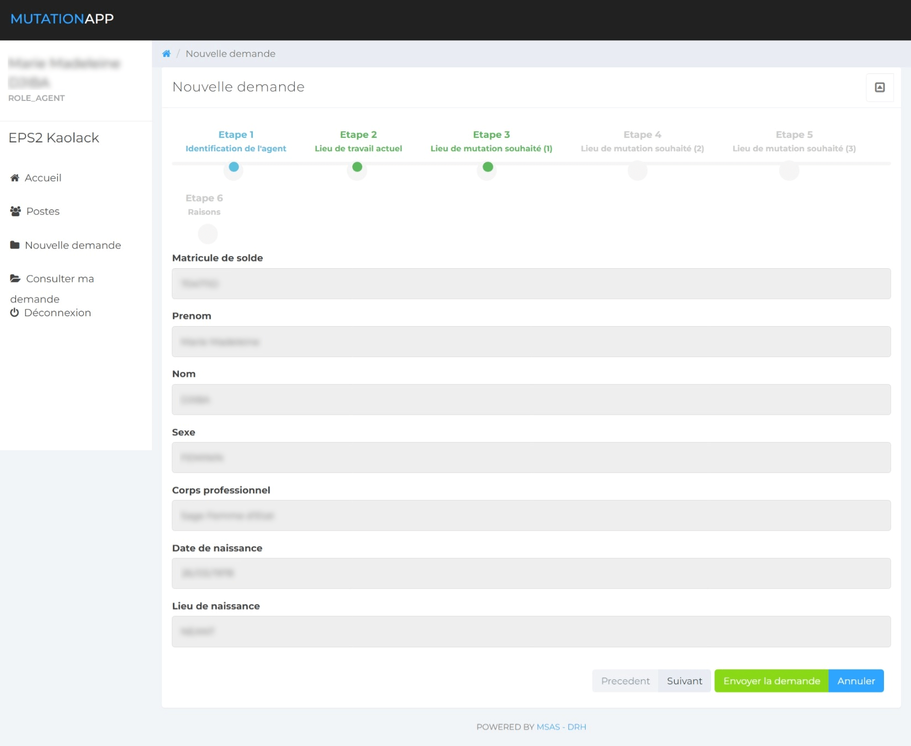
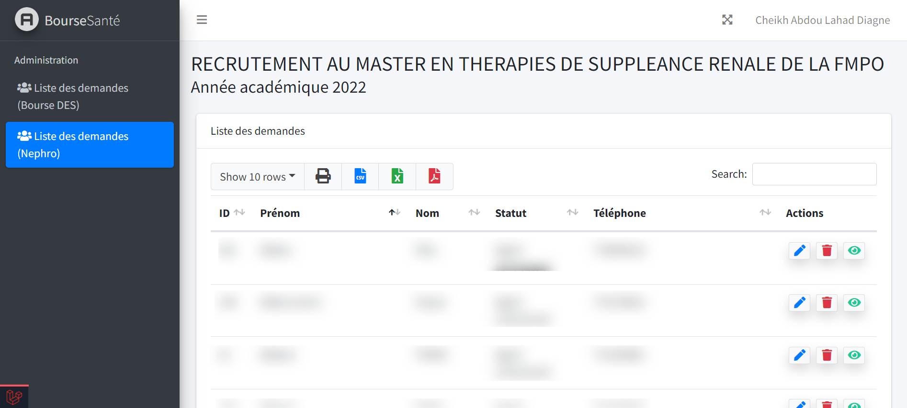

Enjeu
La mobilité des agents et plusieurs démarches administratives reposaient sur des circuits difficiles à suivre. MIRSAS apporte un traitement numérique des demandes, de leur dépôt à leur instruction.
Contribution
Recueil des besoins, modélisation des processus, architecture, développement, tests, déploiement et documentation. Le travail couvre également la dématérialisation des bourses, de cinq procédures administratives et l’authentification des diplômes d’État par QR code.
e‑DRHSanté en images
L’Agence de Presse Sénégalaise présente le lancement de la plateforme e‑DRHSanté, conçue pour moderniser la gestion des procédures administratives des ressources humaines en santé.
Reportage de l’APS TV — Voir sur YouTube ↗
Aperçu


